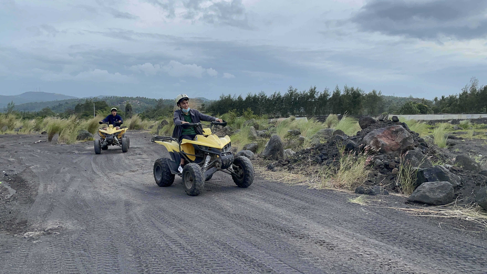
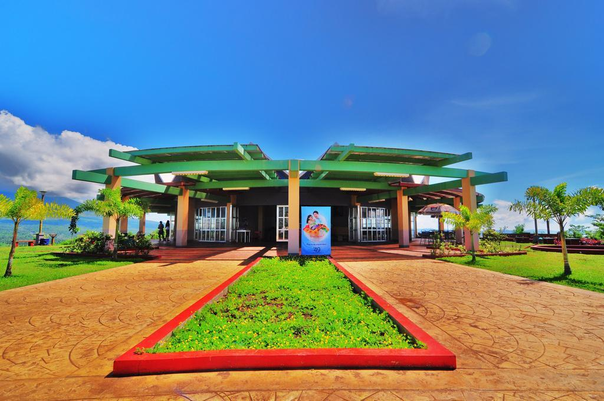

Lignon Hills
Lakandula Drive, Legazpi City
As you ascend to the summit, a mesmerizing panorama unfolds, revealing the sprawling urban tapestry below, the sparkling Albay Gulf, and the regal Mayon Volcano standing tall and proud against the horizon.
Lignon Hill's historical significance extends beyond its natural beauty. During World
War II, American and Filipino soldiers used the hill as a vantage point. Remaining bunkers
and trenches can still be explored, providing a moving window into the area's turbulent past.
Interpretive markers enhance the visitor's experience by offering insights into the hill's
historical significance.

Photo | Lakwatserong Bicolano

Visitors Experience and Activities:
Lignon Hill offers trails that are kept up nicely for those looking for an active adventure that takes
them to the top. Along with being physically stimulating, the journey is encircled by native flora and
lush greenery. It's a chance for outdoor enthusiasts to explore the local biodiversity and enjoy some
quality time in nature. The zip line that crosses the hill is a
great way for thrill-seekers to up their experience.
A breathtaking experience that offers a bird's-eye view of Legazpi City and the alluring
terrain below is provided to participants as they soar through the skies. The Lignon Hill experience is
made even more exciting by this adventure. Lignon Hill is a great place for families and friends to hang
out in addition to being a haven for adventure seekers. Gardens and picturesque picnic
spots make for the ideal environment for a relaxing day out. With the soft breeze and the
surrounding scenery, it's the perfect place to relax.

Photo | mamasguidehome

Photo | mamasguidehome

Photo | mamasguidehome
Miguel Lorenzo Sanio
Let me tell you – it's the real deal! The 20-minute uphill stroll might seem a tad steep, but trust me,
the view up there is so worth it. But it's not just about the views; there's a whole activity zone up there. 🤯
However, the park looked messy with dirt and old paint on benches and play areas. The paths were cracked,
and there was trash everywhere. It seemed like nobody took care of it.💔💔💔
1 week ago